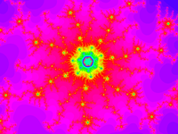
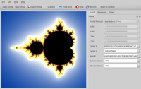
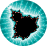
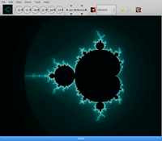
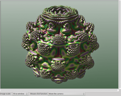
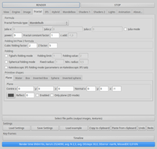
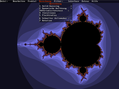
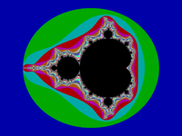
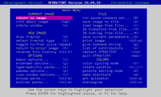

Fraktale
Zum Verständnis dieses Artikels sind folgende Seiten hilfreich:
Verwenden eines PPAs, optional
Einen Programmstarter erstellen, optional
Root-Rechte, optional
Fraktale bzw. fraktale Geometrie im engeren Sinn ist das grafische Ergebnis bestimmter mathematischer Formeln, deren Lösung sich insbesondere durch Selbstähnlichkeit (Skaleninvarianz) auszeichnet. Bedeutende Mathematiker in diesem Zusammenhang sind Benoît Mandelbrot, Wacław Sierpiński und Gaston Maurice Julia.
Fraktale finden sich in vielen Bereichen wieder. In der Pflanzenwelt sind dies beispielsweise die Blumenkohl-Variante Romanesko oder Farnblätter, aber auch Bäume, Blutgefäße, Flusssysteme und Küstenlinien zählen dazu. Entsprechende Strukturen finden sich inzwischen auch in technischen Geräten wie z.B. Smartphones (Fraktalantenne) wieder.
Inhalt dieses Artikel ist eine alphabetische Programmübersicht zu Fraktalgeneratoren, wobei der Schwerpunkt auf Programmen mit grafischer Oberfläche liegt. Fast alle der genannten Programme sind über die offiziellen Paketquellen installierbar (Abweichungen sind in der jeweiligen Beschreibung zu finden).
FractalGenerator¶

FractalGenerator  ist eine Entwicklung von Thomas Dreibholz. Schwerpunkt ist die Erstellung sehr großer Bilddateien, die laut Aussage des Programmautors nur durch den Hauptspeicher des genutzten Systems begrenzt wird. Wie bei FractalNow und Fraqtive wird die Grafikbibliothek Qt4 verwendet. Genutzt werden kann aber nur die Mandelbrot-Menge.
ist eine Entwicklung von Thomas Dreibholz. Schwerpunkt ist die Erstellung sehr großer Bilddateien, die laut Aussage des Programmautors nur durch den Hauptspeicher des genutzten Systems begrenzt wird. Wie bei FractalNow und Fraqtive wird die Grafikbibliothek Qt4 verwendet. Genutzt werden kann aber nur die Mandelbrot-Menge.
Installation¶
Folgendes Paket muss installiert werden [1]:
fractgen (universe)
 mit apturl
mit apturl
Paketliste zum Kopieren:
sudo apt-get install fractgen
sudo aptitude install fractgen
Bei Bedarf kann alternativ das Personal Packages Archiv (PPA) [2] des Entwicklers genutzt werden, das die jeweils aktuelle Version enthält.
Verwendung¶
Bei Ubuntu-Varianten mit einem Anwendungsmenü erfolgt der Programmstart über "Grafik -> fractgen" [3]. Das Programm besitzt ein englischsprachiges Menü. Ausgewählt wird der Fraktaltyp über "Algorithm". In das Fraktal hineinzoomen kann man, in dem bei gedrückter linker Maustaste  ein Rahmen gezogen wird. In diesem Rahmen erfolgt dann ein Mittelklick
ein Rahmen gezogen wird. In diesem Rahmen erfolgt dann ein Mittelklick  . Gespeichert werden kann das Ergebnis als PNG-Bild und als XML-Datei (Formelparameter).
. Gespeichert werden kann das Ergebnis als PNG-Bild und als XML-Datei (Formelparameter).
FractalNow¶
FractalNow ist Fraqtive (siehe unten) sehr ähnlich. Das mit Hilfe der Grafikbibliothek Qt4 erstellte englischsprachige Programm eignet sich zur Darstellung vom Mandelbrot- und Julia-Mengen.
Installation¶
fractalnow (universe)
mit apturl
Paketliste zum Kopieren:
sudo apt-get install fractalnow
sudo aptitude install fractalnow

Verwendung¶
Bei Ubuntu-Varianten mit einem Anwendungsmenü erfolgt der Programmstart über "Bildung -> QFraktalNow". Unter "Fractal -> Fractal Formula" stehen 9 verschiedene Funktionen der Mandelbrot- und Julia-Menge zur Auswahl. Zoomfunktionen sind über die Tasten + bzw. - realisiert. Gespeichert werden können sowohl die erzeugten Bilder (PNG-Format) als auch die Farbpalette (Gradient) und die Formelparameter.
Fraqtive¶
Fraqtive ist ein ebenfalls mit Hilfe der Bibliothek Qt4 erstelltes grafisches Programm, um auf der Mandelbrot- oder Julia-Menge basierende Grafiken zu erstellen. Zu Installation und Verwendung gibt es einen eigenen Artikel: Fraqtive
GIMP¶
Auf den ersten Blick scheint das Bildbearbeitungsprogramm GIMP hier fehl am Platze. Es enthält jedoch unter dem Menüpunkt "Filter -> Render -> Fraktal-Explorer" einen integrierten Fraktalgenerator. Voraussetzung ist ein leeres Bild, das via "Datei -> Neu" erstellt werden kann. So kann man Fraktalerzeugung und Nachbearbeitung des Ergebnisses bequem kombinieren.
Gnofract 4D¶

Gnofract 4D ist einer der umfangreichsten Fraktalgeneratoren. Das Programm bietet Unterstützung für mehrere Prozessorkerne und weitere Funktionen, um die Berechnung von Fraktalen zu beschleunigen. Außerdem ist es nicht auf die Mandelbrot- und Julia-Menge beschränkt, sondern bietet viele weitere Fraktaltypen zur Auswahl.
Installation¶
Als einziges der hier aufgeführten Programme ist Gnofract 4D nicht in den offiziellen Paketquellen enthalten. Die Installation des in Python 2.7 entwickelten Programms ist aber relativ unkompliziert.
Manuell¶
Voraussetzung ist die Installation der folgenden Pakete:
build-essential
python-dev
python-gtk2-dev
libgconf2-dev
libjpeg-dev
libpng-dev
mit apturl
Paketliste zum Kopieren:
sudo apt-get install build-essential python-dev python-gtk2-dev libgconf2-dev libjpeg-dev libpng-dev
sudo aptitude install build-essential python-dev python-gtk2-dev libgconf2-dev libjpeg-dev libpng-dev
Dann lädt man den Quellcode herunter und installiert ihn via pip:
wget -O gnofract4d-master.zip https://github.com/edyoung/gnofract4d/archive/master.zip pip install gnofract4d-master.zip
Soll das Programm systemweit installiert werden, muss pip mit Root-Rechten [6] ausgeführt werden.
Hinweis!
Fremdsoftware kann das System gefährden.
Verwendung¶

Bei Ubuntu-Varianten mit einem Anwendungsmenü erfolgt der Programmstart über "Grafik -> Gnofract 4D Fractal Generator". Alternativ kann der Befehl ~/.local/bin/gnofract4d verwendet werden. Das Vergrößern bzw. Verkleinern erfolgt mit den Maustasten bzw.  . Bilder (PNG-Format) und Formelparameter (.frm; Gnofract 4D verwendet das gleiche Format wie XFractInt) werden separat gespeichert.
. Bilder (PNG-Format) und Formelparameter (.frm; Gnofract 4D verwendet das gleiche Format wie XFractInt) werden separat gespeichert.
Weitere Information zur Verwendung enthält das ausführliche Handbuch zum Programm und der Artikel Fraktales Gemüse - Selbstähnliche Grafiken generieren mit Gnofract4d  (LinuxUser, 02/2013).
(LinuxUser, 02/2013).
Deinstallation¶
Um Gnofract 4D wieder vom Rechner zu entfernen, deinstalliert man es via pip:
pip uninstall gnofract4d
Wurde das Programm systemweit installiert, so sind auch hier wieder Root-Rechte notwendig.
Mandelbulber¶
Mandelbulber und die Weiterentwicklung Mandelbulber v2 sind 3D-Fraktalgeneratoren, die die Erzeugung von Fraktalen mit Raytracing kombinieren und auch animierte Sequenzen erlauben. Die Einarbeitung benötigt etwas Zeit, bevor das Ergebnis auch Anspruchsvolle zufriedenstellt. Was man dann erreichen kann, zeigt das Video Au Jardin Du Vieux Fractal sehr eindrucksvoll.
Installation¶
mandelbulber (universe)
mit apturl
Paketliste zum Kopieren:
sudo apt-get install mandelbulber
sudo aptitude install mandelbulber
oder alternativ
mandelbulber2 (universe, ab Ubuntu 16.10)
mit apturl
Paketliste zum Kopieren:
sudo apt-get install mandelbulber2
sudo aptitude install mandelbulber2
Verwendung¶
Bei Ubuntu-Varianten mit einem Anwendungsmenü erfolgt der Programmstart über "Grafik -> Mandelbulber". Die praktische Nutzung erfolgt mit zwei Fenstern (ein drittes dient zur Anzeige von Statusinformationen): Die Auswahl der grundlegenden Eckdaten erfolgt im Kontrollfenster, während das Ergebnis in einem eigenen Fenster (Mandelbulber Renderer Window) angezeigt wird.
 
Im Kontrollfenster befinden sich oben die beiden zentralen Schaltflächen "Render" und "Stop". Mehr Informationen sind der ausführlichen Dokumentation zu entnehmen.
XaoS¶
Gnu Xaos ist ein Fraktalgenerator, der sich durch seine Vielzahl an Basisfraktalen (Mandelbrot, Barnsley, Newton, Phoenix und viele andere) und seine hohe Geschwindigkeit auszeichnet.
Installation¶
xaos (universe)
mit apturl
Paketliste zum Kopieren:
sudo apt-get install xaos
sudo aptitude install xaos

Verwendung¶
Bei Ubuntu-Varianten mit einem Anwendungsmenü erfolgt der Programmstart über "Grafik -> Xaos - Fractal Zoomer". Hineinzoomen erfolgt bei gedrückter linker Maustaste , rückwärts geht es bei gedrückten rechten Maustaste . Bei gedrückter mittlerer Maustaste kann der Bezugspunkt verschoben werden. Bilder und Formelparameter können separat gespeichert werden.
Xaos kennt für den Programmstart zahlreiche Optionen. Diese lassen sich im Terminal mit dem Befehl:
xaos -help
anzeigen. Darüber hinaus gibt es eine ausführliche Dokumentation .
XFractInt¶
Dem Klassiker XFractInt merkt man die Entstehung als DOS-Programm ab 1988 an. Es lässt sich nicht sehr komfortabel bedienen, bietet aber eine sehr große Auswahl unterschiedlicher Fraktaltypen. Eine weitere Schwäche ist die fehlende Farbtiefe der erzeugten Grafiken.
Installation¶
xfractint (multiverse)
mit apturl
Paketliste zum Kopieren:
sudo apt-get install xfractint
sudo aptitude install xfractint
Programmstarter¶
Der Programmstart wird komfortabler, wenn man sich einen Programmstarter ~/.local/share/applications/xfractint.desktop im Homeverzeichnis erstellt [5]:
[Desktop Entry] Type=Application Version=1.0 Name=XFractInt Comment=Fractal Generator Comment[de]=Fraktal Generator Exec=xfractint -ctrlwindow Icon=/PFAD/ZU/xfractint_logo.png Categories=Education;Science;Math; Terminal=false
Abschließend den Programmstarter ausführbar machen:
chmod u+x ~/.local/share/applications/xfractint.desktop
 
Verwendung¶
Der Programmstart erfolgt in einem Terminalfenster [4] (sofern man sich keinen Programmstarter erstellt hat):
xfractint -ctrlwindow [OPTIONEN]
Mehr Informationen zu den Optionen sind der Manpage zu entnehmen.
Mit der Option -ctrlwindow erhält man ein zweites Fenster mit dem englischsprachigen Hauptmenü von XFractInt. Neben dem Fraktaltyp werden hier spezielle Optionen zum ausgewählten Fraktal, die Farbpalette und vieles andere mehr festgelegt.
In das Fraktal hineinzoomen kann man, in dem bei gedrückter linker Maustaste ein Rahmen gezogen wird. Gespeichert wird das Ergebnis als GIF-Bild. Darüber hinaus steht eine ausführliche Dokumentation zur Verfügung.
Sonstige¶
Neben den hier kurz vorgestellten Programmen gibt es noch eine Reihe weiterer Programme, die sich mehr oder weniger direkt mit der Erzeugung von Fraktalen beschäftigen. Beispiele sind Fracplanet , Xmountains oder Evolvotron . Um diese Programme zu finden, muss man in den offiziellen Paketquellen ein wenig stöbern. Eine weitere Möglichkeit bietet das Ubuntu Apps Directory .
Abschließend noch eine Variante für die Kommandozeile, geschrieben für Python 2. Das Skript erzeugt eine BMP-Grafik mit dem Dateinamen M.bmp, die Grafik stellt eine Mandelbrot-Menge dar.
1 2 3 4 5 6 7 8 9 10 11 12 13 14 15 16 17 18 19 20 21 | _ = ( 255, lambda V ,B,c :c and Y(V*V+B,B, c -1)if(abs(V)<6)else ( 2+c-4*abs(V)**-0.4)/i ) ;v, x=1500,1000;C=range(v*x );import struct;P=struct.pack;M,\ j ='<QIIHHHH',open('M.bmp','wb').write for X in j('BM'+P(M,v*x*3+26,26,12,v,x,1,24))or C: i ,Y=_;j(P('BBB',*(lambda T:(T*80+T**9 *i-950*T **99,T*70-880*T**18+701* T **9 ,T*i**(1-T**45*2)))(sum( [ Y(0,(A%3/3.+X%v+(X/v+ A/3/3.-x/2)/1j)*2.5 /x -2.7,i)**2 for \ A in C [:9]]) /9) ) ) |
Links¶
Die Ästhetik der Fraktale - Mathematik und Kunst des Unendlichen
 - Rafael Reiter, 02/2006
- Rafael Reiter, 02/2006Fraktale - Die Faszination der verborgenen Dimension
- Video, DokuWorld 05/2013Beispielbilder:
Fractal Software For Linux
- FraktalgeneratorenElectric Sheep - Pseudo-Bildschirmschoner, der u.a. mit Fraktalen arbeitet
Fyre
- komplexe Funktionsgrafiken, in den offiziellen Paketquellen enthaltenApophysis 7x
- Windows-Software (unter Linux via Wine nutzbar)Bildung und Wissenschaft
 Programmübersicht
Programmübersicht
- Erstellt mit Inyoka
-
 2004 – 2017 ubuntuusers.de • Einige Rechte vorbehalten
2004 – 2017 ubuntuusers.de • Einige Rechte vorbehalten
Lizenz • Kontakt • Datenschutz • Impressum • Serverstatus -
Serverhousing gespendet von